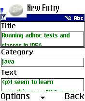
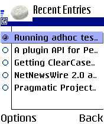

@header@

<table width="100%" cellspacing="0" cellpadding="8" class="item">
  <tr class="itemHeader">
    <td>
      Blog Entries
    </td>
  </tr>
  <tr class="itemBody">
    <td>
      <p>
      A blog entry is typically something like a short article, piece of news, insight, abstract, opinion and so on. From a technical perspective, blog entries in Pebble are just short pieces of HTML that represent the content that you wish to display. This can be anything from a simple piece of text to an elaborate collection of text, images, tables, etc. In addition to this, Pebble stores other pieces of information alongside your blog entries such as a title, the date/time of publication and author.
      </p>

      <p>
      <h5>Adding a Blog Entry</h5>
      To add a new blog entry, choose the <b>New Entry</b> option from the menu. In this screen you can fill in the title and main body of the entry, along with the category if your blog supports it. When you've finished writing the entry, choosing the <b>Post</b> option will post the entry to your weblog.
      </p>

      <p>
      The body of a blog entry is just a XHTML/HTML fragment, meaning that you can use any XHTML/HTML tags you like for markup and formatting. Common examples include using bold and italics. Also, you can include other elements such as hyperlinks and <a href="images.html">images</a>.

      For convenience when posting code and HTML fragments you can enclose these within &lt;escape&gt; and &lt;/escape&gt; tags. In doing so, any < or > characters will be automatically escaped to &amp;lt; and &amp;gt; respectively.
      </p>

      <p>
      <h5>Editing a Recent Blog Entry</h5>
      Blog entries can be edited at any time after they have been posted. First, choose the <b>Entries</b> option to display a list of the most recent entries. To edit an entry, highlight it in the list and choose the <b>Edit</b> option. This opens the same screen used to add a new entry, and you can again edit and choose <b>Post</b> option.
      </p>

      <p>
      <h5>Removing a Blog Entry</h5>
      Existing blog entries can also be removed at any time. To remove an entry, choose the <b>Delete</b> option after highlighting an entry from the list of recent blog entries. This will ask for a confirmation.
      </p>
    </td>
  </tr>
</table>

@footer@